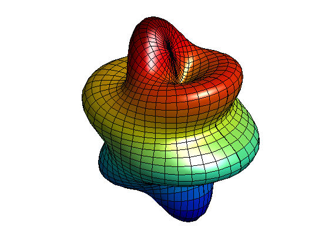

球面調和関数
By Denise L. Chen 9-1-93.
球面調和関数は、球面バージョンのフーリエ級数です。これらは、地球の自由振動のモデル化に使用できます。
半径 5 の球の表面上に、振幅 2 の球面調和関数 Ymn(6,1) のイメージが描かれています。
% Define constants. degree = 6; order = 1; % Create the grid delta = pi/40; theta = 0 : delta : pi; % altitude phi = 0 : 2*delta : 2*pi; % azimuth [phi,theta] = meshgrid(phi,theta); % Calculate the harmonic Ymn = legendre(degree,cos(theta(:,1))); Ymn = Ymn(order+1,:)'; yy = Ymn; for kk = 2: size(theta,1) yy = [yy Ymn]; end; yy = yy.*cos(order*phi); order = max(max(abs(yy))); rho = 5 + 2*yy/order; % Apply spherical coordinate equations r = rho.*sin(theta); x = r.*cos(phi); % spherical coordinate equations y = r.*sin(phi); z = rho.*cos(theta); % Plot the surface clf surf(x,y,z) light lighting phong axis tight equal off view(40,30) camzoom(1.5)